Audio and Vision AI Pipeline
Building Voice and Vision Interactive Edge AI Systems
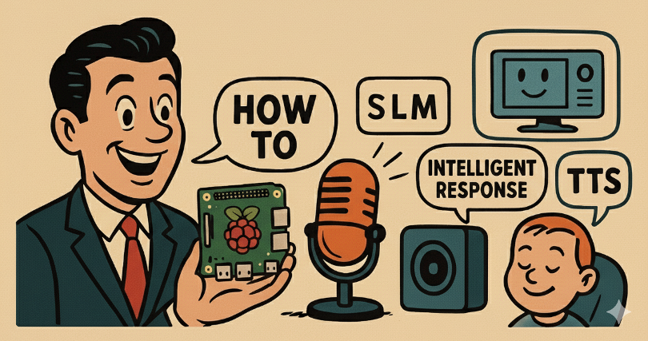
Introduction
In this chapter, we extend our SLM and SVL capabilities by creating a complete audio processing pipeline that transforms voice or image input into intelligent vocal responses. We will learn to integrate Speech-to-Text (STT), Small Language (or Visual) Models, and Text-to-Speech (TTS) technologies to build conversational AI systems that run entirely on Raspberry Pi hardware.
This chapter bridges the gap between our existing computer vision knowledge and multimodal AI applications, demonstrating how different AI components work together in real-world edge deployments.
The Audio to Audio AI Pipeline Architecture
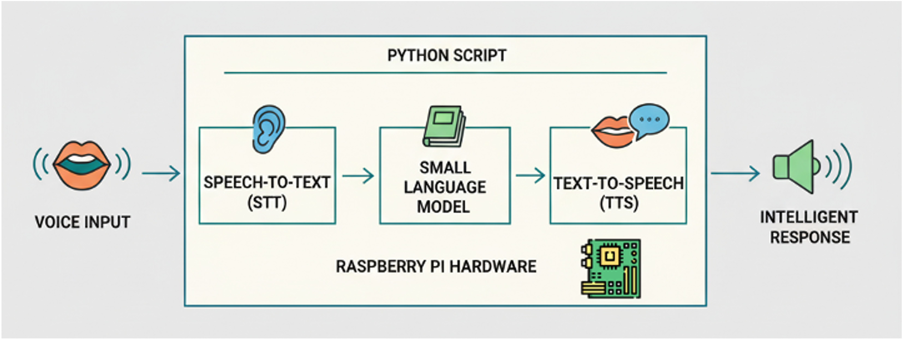
We will understand how to architect and implement multimodal AI systems by building a complete voice interaction pipeline. The goal is to gain practical experience with audio processing on edge devices while learning to efficiently integrate multiple AI models within resource constraints. Additionally, you will develop troubleshooting skills for complex AI pipelines and understand the engineering trade-offs involved in edge audio processing.
Understanding Multimodal AI Systems
When we built computer vision systems earlier in the course, we processed visual data to extract meaningful information. Audio AI systems follow a similar principle but work with temporal audio signals instead of static images. The key insight is that speech processing requires multiple specialized models working together, rather than a single end-to-end system.
Modern small models, such as Gemma 3n, can process audio directly and its prompt. Today (September 2025), Gemma 3n can transcribe text from audio files using Hugging Face Transformers, but it is not available with Ollama
Consider how humans process spoken language. We simultaneously parse the acoustic signal, understand the linguistic content, reason about the meaning, and formulate responses. Our AI pipeline mimics this process by breaking it into distinct, manageable components.
System Architecture Overview
Our comprehensive audio AI pipeline comprises four main components, connected in sequence.
[Microphone] → [STT Model] → [SLM] → [TTS Model] → [Speaker]
Audio Text Text AudioAudio captured by the microphone is processed through a Speech-to-Text model, which converts sound waves into text transcriptions. This text becomes input for our Small Language Model, which generates intelligent responses. Finally, a Text-to-Speech system converts the written response back into spoken audio.
Each component has specific requirements and limitations. The STT model must handle various accents and noise conditions. The SLM needs sufficient context to generate coherent responses. The TTS system must produce speech that sounds natural. Understanding these individual requirements helps us optimize the overall system performance.
Edge AI Considerations
Running this pipeline on a Raspberry Pi presents unique challenges compared to cloud-based solutions. We must carefully manage memory usage, processing time, and model sizes. The benefit is complete local processing with no internet dependency and enhanced privacy protection.
The choice of models becomes critical. We select Moonshine for STT because it’s specifically optimized for edge devices. We utilize small language models, such as llama3.2:3b, for reasonable performance on limited hardware. For TTS, we choose PIPER for its balance between quality and computational efficiency.
Hardware Setup and Audio Capture
Audio Hardware Detection
Begin by identifying the audio capabilities of our system. The Raspberry Pi can work with various audio input and output devices, but proper configuration is essential for reliable operation.
Use the command arecord -l to list available recording devices. You should see output showing your microphone’s card and device numbers. For USB microphones, this typically appears as something like card 2: Microphone [USB Condenser Microphone], device 0: USB Audio [USB Audio]. The critical information is the card number and device number, which you’ll reference as hw:2,0 in the code.

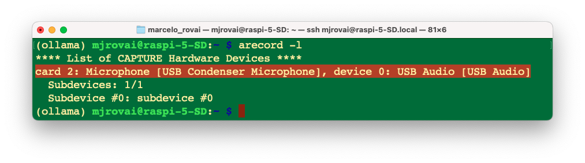
Testing Basic Audio Functionality
Before writing Python code, we should verify that our audio setup works correctly at the system level. Let’s record a short test file using:
arecord --device="plughw:2,0" --format=S16_LE --rate=16000 -c2 myaudio.wav
Play back the recording with aplay myaudio.wav to confirm that both capture and playback work correctly (use [CTRL]+[C] to stop the recording or add a duration in seconds to the command line).
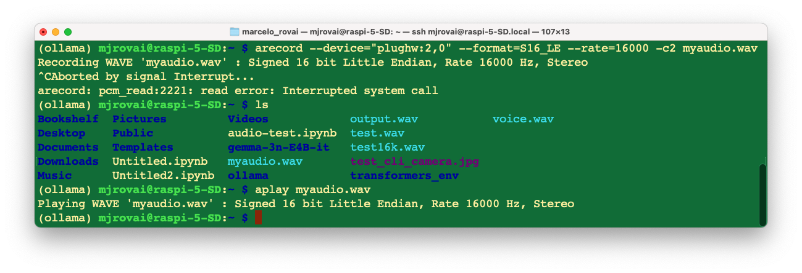
The
.WAVfile can be played on another device (such as a computer) or on the Raspberry Pi, as a speaker can be connected via USB or Bluetooth.
Python Audio Integration
Now, we should install the necessary audio processing dependencies.
source ~/ollama/bin/activateThe PyAudio library requires system-level audio libraries; therefore, install them using sudo apt-get.
sudo apt-get update
sudo apt-get install libasound-dev libportaudio2 libportaudiocpp0 portaudio19-dev
sudo apt-get install python3-pyaudiolibasound-devcovers ALSA development headers needed for audio libraries on Pipython3-pyaudioprovides a prebuilt PyAudio package for most use cases
Let’s create a working directory: Documents/OLLAMA/SST and verify the USB device index, with the below script (verify_usb_index.py:
import pyaudio
p = pyaudio.PyAudio()
for ii in range(p.get_device_count()):
print(ii, p.get_device_info_by_index(ii).get('name'))As a result, we should get:
0 USB Condenser Microphone: Audio (hw:2,0)
1 pulse
2 defaultWhat confirms that the index is 2 (hw:2,0)
A lot of messages should appear. They are mostly ALSA and JACK warnings about missing or undefined virtual/surround sound devices—they are common on Raspberry Pi systems with minimal or headless sound configs and typically do not impact basic USB microphone capture. If our USB Microphone appears as a recording device (as it does: “hw:2,0”), we can safely ignore most of these unless audio capture fails.
To clean the output, we can use:
python verify_usb_index.py 2>/dev/null
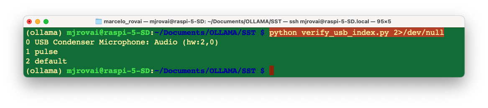
Test Audio Python Script
This script (test_audio_capture.py) records 10 seconds of mono audio at 16 kHz to output.wav using the USB microphone.
import pyaudio
import wave
FORMAT = pyaudio.paInt16
CHANNELS = 1
RATE = 16000 # 16 kHz
CHUNK = 1024
RECORD_SECONDS = 10
DEVICE_INDEX = 2 # replace this with your detected USB mic's index
WAVE_OUTPUT_FILENAME = "output.wav"
audio = pyaudio.PyAudio()
stream = audio.open(format=FORMAT, channels=CHANNELS,
rate=RATE, input=True, input_device_index=DEVICE_INDEX,
frames_per_buffer=CHUNK)
print("Recording...")
frames = []
for i in range(0, int(RATE / CHUNK * RECORD_SECONDS)):
data = stream.read(CHUNK, exception_on_overflow=False)
frames.append(data)
print("Finished recording.")
stream.stop_stream()
stream.close()
audio.terminate()
wf = wave.open(WAVE_OUTPUT_FILENAME, 'wb')
wf.setnchannels(CHANNELS)
wf.setsampwidth(audio.get_sample_size(FORMAT))
wf.setframerate(RATE)
wf.writeframes(b''.join(frames))
wf.close()Understanding the audio configuration parameters helps prevent common problems. We use 16-bit PCM format (pyaudio.paInt16) because it provides good quality while remaining computationally efficient. The 16kHz sampling rate balances audio quality with processing requirements - most speech recognition models expect this rate.
The buffer size (CHUNK = 1024) affects latency and reliability. Smaller buffers reduce latency but may cause audio dropouts on busy systems. Larger buffers increase latency but provide more stable recording.
Let’s Playback to verify if we get it correctly:
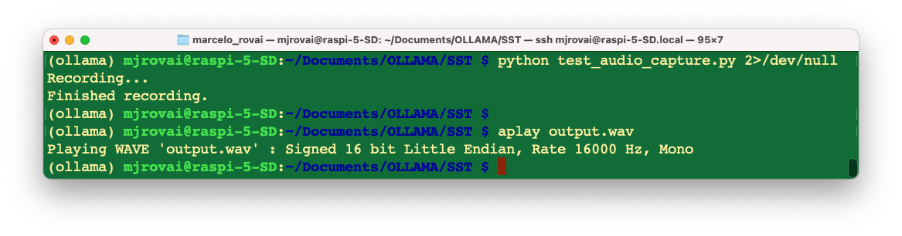
Speech Recognition (SST) with Moonshine
Why Moonshine for Edge Deployment
Traditional speech recognition systems, such as OpenAI’s Whisper, are highly accurate but require substantial computational resources. Moonshine is specifically designed for edge devices, using optimized model architectures and quantization techniques to achieve good performance on resource-constrained hardware.
The ONNX (Open Neural Network Exchange) version of Moonshine provides additional optimization benefits. ONNX Runtime includes hardware-specific optimizations that can significantly improve inference speed on ARM processors, such as those found in Raspberry Pi devices.
Model Selection Strategy
Moonshine offers different model sizes with clear trade-offs between accuracy and computational requirements. The “tiny” model processes audio quickly but may struggle with difficult audio conditions. The “base” model provides better accuracy but requires more processing time and memory.
For initial development, we should start with the tiny model to ensure that the pipeline works correctly. Once the complete system is functional, we can experiment with larger models to find the optimal balance for our specific use case and hardware capabilities.
Implementation and Preprocessing
Install Moonshine with
pip install useful-moonshine-onnx@git+https://github.com/moonshine
ai/moonshine.git#subdirectory=moonshine-onnx`This specific installation method ensures compatibility with the ONNX runtime optimizations.
Let’s run the test script below (transcription_test.py):
import moonshine_onnx
text = moonshine_onnx.transcribe('output.wav', 'moonshine/tiny')
print(text[0])As a result, we will get the corresponding text, which was recorded before:
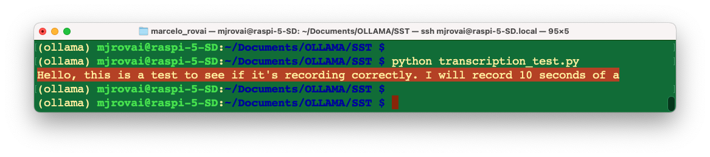
Empty or incorrect transcriptions are common issues in speech recognition systems. These failures can result from background noise, insufficient volume, unclear speech, or mismatches in audio format. Implementing robust error handling prevents these issues from crashing your entire pipeline.
SLM Integration and Response Generation
Connecting STT Output to SLMs
The text output from your speech recognition system becomes input for your Small Language Model. However, the characteristics of spoken language differ significantly from written text, especially when filtered through speech recognition systems.
Spoken language tends to be more informal, may contain false starts and repetitions, and might include transcription errors. Our SLM integration should account for these characteristics. On a final implementation, we should consider preprocessing the STT output to clean up obvious transcription errors or providing context to the SLM about the voice interaction nature of the input.
Optimizing Prompts for Voice Interaction
Voice-based interactions have different expectations than text-based chats. Responses should be concise since users must listen to the entire output. Avoid complex formatting or long lists that work well in text but become cumbersome when spoken aloud.
We should design our system prompts to encourage responses appropriate for voice interaction. For example, “Provide a brief, conversational response suitable for speaking aloud” can help guide the SLM toward more appropriate output formatting.
Unlike single-query text interactions, voice conversations often involve multiple exchanges. Implementing conversation context memory significantly enhances the user experience. However, context management on edge devices requires careful consideration of memory usage.
Consider implementing a sliding window approach, where you maintain the last few exchanges in memory but discard older context to prevent memory exhaustion, balancing context length with available system resources.
Let’s create a function to handle this. For test, run slm_test.py:
import ollama
def generate_voice_response(user_input, model="llama3.2:3b"):
"""
Generate a response optimized for voice interaction
"""
# Context-setting prompt that guides the model's behavior
system_context = """
You are a helpful AI assistant designed for voice interactions.
Your responses will be converted to speech and spoken aloud to the user.
Guidelines for your responses:
- Keep responses conversational and concise (ideally under 50 words)
- Avoid complex formatting, lists, or visual elements
- Speak naturally, as if having a friendly conversation
- If the user's input seems unclear, ask for clarification politely
- Provide direct answers rather than lengthy explanations unless specifically
requested
"""
# Combine system context with user input
full_prompt = f"{system_context}\n\nUser said: {user_input}\n\nResponse:"
response = ollama.generate(
model=model,
prompt=full_prompt
)
return response['response']
# Answering the user question:
user_input = "What is the capital of Malawi?"
response = generate_voice_response(user_input)
print (response)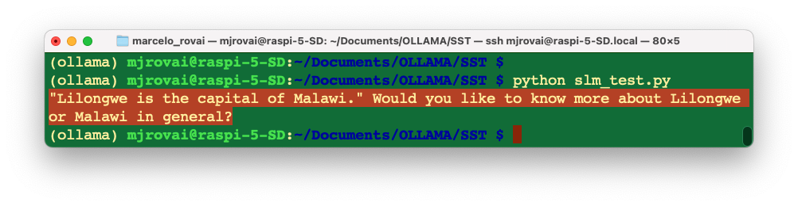
Text-to-Speech (TTS) with PIPER
Text-to-speech systems face different challenges than speech recognition systems. While STT must handle various input conditions, TTS must generate consistent, natural-sounding output across diverse text inputs. The quality of TTS has a significant impact on the user experience in voice interaction systems.
PIPER provides an excellent balance between voice quality and computational efficiency for edge deployments. Unlike cloud-based TTS services, PIPER runs entirely locally, ensuring privacy and eliminating network dependencies.
Voice Model Selection and Installation
PIPER offers various voice models with different characteristics. The “low”, “medium”, and “high” quality designations primarily refer to model size and computational requirements rather than dramatic quality differences. For most applications, the low-quality models provide acceptable voice output while running efficiently on Raspberry Pi hardware.
Install PIPER with pip install piper-tts, create a voices directory:
pip install piper-tts
mkdir -p voicesDownload voice models from the Hugging Face repository. Each voice model requires both the model file (.onnx) and a configuration file (.json). The configuration file contains model-specific parameters essential for generating proper audio.
We should download both files for our chosen voice; for example, the English female “lessac” voice provides clear, natural speech suitable for most applications.
wget -O voices/en_US-lessac-low.onnx https://huggingface.co/rhasspy/piper-
voices/resolve/v1.0.0/en/en_US/lessac/low/en_US-lessac-low.onnx
wget -O voices/en_US-lessac-low.onnx.json https://huggingface.co/rhasspy/piper-
voices/resolve/v1.0.0/en/en_US/lessac/low/en_US-lessac-low.onnx.jsonLet’s run the code below (tts_test.py) for testing:
import subprocess
import os
def text_to_speech_piper(text, output_file="piper_output.wav"):
"""
Convert text to speech using PIPER and save to WAV file
Args:
text (str): Text to convert to speech
output_file (str): Output WAV file path
"""
# Path to your voice model
model_path = "voices/en_US-lessac-low.onnx"
# Check if model exists
if not os.path.exists(model_path):
print(f"Error: Model file not found at {model_path}")
return False
try:
# Run PIPER command
process = subprocess.Popen(
['piper', '--model', model_path, '--output_file', output_file],
stdin=subprocess.PIPE,
stdout=subprocess.PIPE,
stderr=subprocess.PIPE,
text=True
)
# Send text to PIPER
stdout, stderr = process.communicate(input=text)
if process.returncode == 0:
print(f"\nSpeech generated successfully: {output_file}")
return True
else:
print(f"Error: {stderr}")
return False
except Exception as e:
print(f"Error running PIPER: {e}")
return False
# converting text to sound:
txt = "Lilongwe is the capital of Malawi. Would you like to know more about \
Lilongwe or Malawi in general?"
if text_to_speech_piper(txt):
print("You can now play the file with: aplay piper_output.wav")
else:
print("Failed to generate speech") Runing the script, a piper_output.wav file will be generated, which is the text converted into speech.
Handling Long Text and Special Cases
TTS systems may struggle with very long input text or special characters. Implement text preprocessing to handle these cases gracefully. Break long responses into shorter segments, handle abbreviations and numbers appropriately, and filter out problematic characters that might cause TTS failures.
Consider implementing text chunking for responses longer than a reasonable speaking length. This prevents both TTS processing issues and user fatigue from overly long audio responses.
Pipeline Integration and Optimization
Building the Complete System
Integrating all components requires careful attention to error handling and resource management. Each stage of the pipeline can fail independently, and robust systems must handle these failures gracefully rather than crashing.
Design our integration with modularity in mind. Test each component independently before combining them. This approach simplifies debugging and allows you to optimize individual components separately.
We should also implement proper logging throughout our pipeline. When complex systems fail, detailed logs help identify whether the issue occurs in audio capture, speech recognition, language model processing, text-to-speech conversion, or audio playback.
Performance Optimization Strategies
Measure the timing of each pipeline component to identify bottlenecks. Typically, the SLM inference takes the longest time, followed by TTS generation. Understanding these timing characteristics helps prioritize optimization efforts.
Consider implementing concurrent processing where possible. For example, you might begin TTS processing for the first part of an extended response while the SLM is still generating the remainder. However, be cautious about memory usage when implementing parallel processing on resource-constrained devices.
Memory Management Considerations
Edge devices have limited RAM, and loading multiple large models simultaneously can cause memory pressure. Implement strategies to manage memory efficiently, such as loading models only when needed or using model swapping for infrequently used components.
Monitor system memory usage during operation and implement safeguards to prevent memory exhaustion. Consider implementing graceful degradation where your system switches to smaller, more efficient models if memory becomes constrained.
Designing Resilient Systems
Production-quality voice interaction systems must handle various failure modes gracefully. Network interruptions, hardware disconnections, model loading failures, and unexpected input conditions should not cause your system to crash.
Implement comprehensive error handling at each pipeline stage. When speech recognition produces empty output, provide the user with meaningful feedback rather than processing empty strings. When TTS fails, consider falling back to text display or simplified audio feedback.
Design user feedback mechanisms that work within your voice interaction paradigm. Audio beeps, LED indicators, or simple voice messages can communicate system status without requiring visual displays.
Debugging Complex Pipelines
Multi-stage systems present unique debugging challenges. When the overall system fails, identifying the specific failure point requires systematic testing approaches.
Implement test modes that allow you to inject known inputs at each pipeline stage. This capability enables you to isolate problems to specific components rather than repeatedly testing the entire system.
Create diagnostic outputs that help understand system behavior. For example, displaying transcription confidence scores, SLM response times, or TTS processing status helps identify performance issues or quality problems.
The full Python Script
Considering the previous points, let’s assemble all the essential components that work together: audio capture, transcription, language model processing, and text-to-speech. We should combine these into a complete voice pipeline that flows naturally from one step to the next.
The key insight here is that each of our developed scripts represents a stage in what’s called an “audio processing pipeline”. Let’s walk through how we can connect these pieces.
Understanding the Pipeline Architecture
The pipeline follows a logical sequence: the voice becomes audio data, that audio is converted into text, the text is processed into an AI response, the response is converted into speech audio, and finally, that speech audio is transformed into sound that we can hear.
We should have a run_voice_pipeline() function in addition to the previous ones that acts as a coordinator, ensuring each step completes successfully before proceeding to the next. If any step fails, the entire pipeline stops gracefully rather than trying to continue with missing data.
Key Integration Points
We should connect the scripts by ensuring the output of each function becomes the input for the following function. For example, record_audio() creates “user_input.wav”, which transcribe_audio() reads to produce text, which generate_response() processes to develop an AI response, and so on.
The error handling at each step ensures that if our microphone isn’t working, or if the AI model is busy, or if the voice model files are missing, we get clear feedback about what went wrong rather than mysterious crashes.
Optimizations for Raspberry Pi
The Raspberry Pi has limited resources compared to a desktop computer, so we should include several optimizations. The cleanup_temp_files() function prevents our storage from filling up with temporary audio files. The audio configuration uses 16kHz sampling (which matches Moonshine’s expectations) rather than CD-quality 44kHz, reducing processing overhead.
The continuous assistant mode includes a manual trigger (pressing Enter) rather than voice activation detection, which saves CPU cycles that would otherwise be spent constantly monitoring audio input.
On a final product, we could include, for example, a KWS (Keyword Spotting) function, based on a TinyML device, where only when a trigger word is spoken, the
record_audio()function starts to work.
Understanding Voice Activity Detection
One of the main improvements from the single scripts stacked and tested separately is what audio engineers call “voice activity detection” (VAD). When we speak to someone face-to-face, we don’t announce, “I’m going to talk for exactly 10 seconds now.” Instead, we say our thoughts, pause naturally, and the listener intuitively knows when you’ve finished.
Our new record_audio_with_silence_detection() function mimics this natural process by continuously analyzing the audio signal’s amplitude—essentially measuring how “loud” each tiny slice of audio is. When the amplitude stays below a threshold for 2 seconds, for example, the system intelligently concludes that we have finished speaking.
The Technical Magic Behind Silence Detection
The recording process now works like a sophisticated audio surveillance system. Every fraction of a second, it captures a small chunk of audio data (determined by your CHUNK size of 1024 samples) and immediately analyzes it. Using Python’s struct module, it converts the raw byte data into numerical values representing sound pressure levels.
The crucial calculation happens in this line: volume = max(chunk_data) / 32768.0. This finds the loudest moment in that tiny audio slice and normalizes it to a scale from 0 to 1, where 0 represents complete silence and 1 represents the maximum possible volume your microphone can capture.
Calibrating the Sensitivity
The silence_threshold=0.01 parameter is our sensitivity control knob: too sensitive (closer to 0.00) and it might stop recording when you pause to think; not sensitive enough (closer to 0.1) and it might keep recording through long periods of quiet background noise.
For a typical indoor Raspberry Pi setup, 0.01 strikes a good balance. It’s sensitive enough to detect when we have stopped talking, but robust enough to ignore minor background sounds, such as air conditioning or distant traffic.
We should experiment with this value based on the specific environment.
Testing and Deployment Strategy
Download the complete script from GitHub: voice_ai_pipeline.py
We can start by testing individual components using detect_audio_devices() first to confirm our USB microphone is still at index 2. Then, we can run run_voice_pipeline() with a simple question to verify the complete flow works.
Once we are confident in single interactions, we can use continuous_voice_assistant() for extended conversations. This mode lets us have back-and-forth exchanges with your AI assistant, making it feel more like a natural conversation partner.
If you want to experiment with different SLM models, we need to change the model parameter in
generate_response().
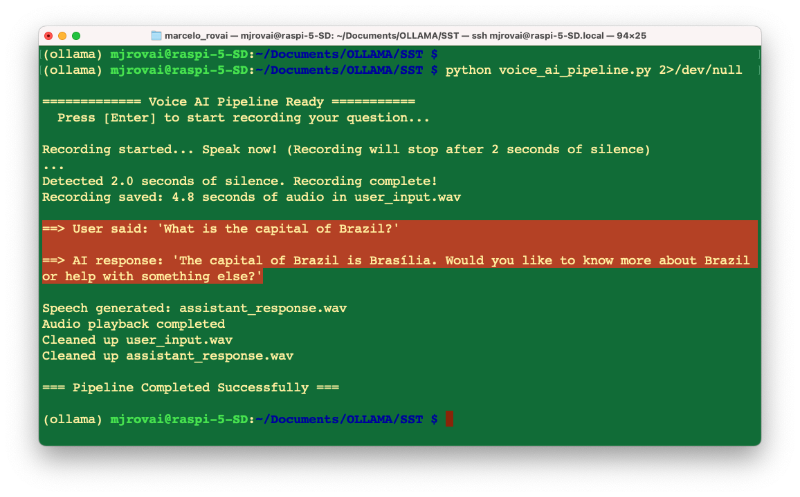
The test with sound can be followed in the video:
The Image to Audio AI Pipeline Architecture
Voice interaction systems have significant potential for educational applications and accessibility improvements by designing interfaces that adapt to different user needs and capabilities. By integrating small visual models, such as Moondream, with existing TTS pipelines, we can create multimodal assistants that describe images for people with visual impairments, converting visual content into detailed spoken descriptions of scenes, objects, and spatial relationships.
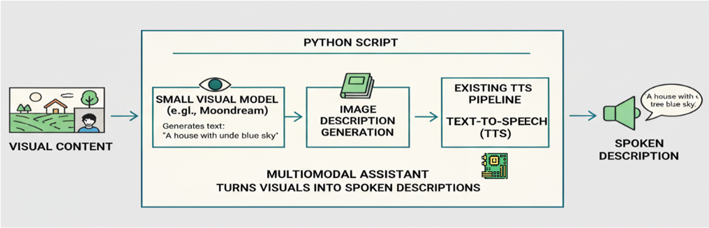
To use the camera, we must ensure that the NumPy version is compatible with the Raspberry Pi system (1.24.2). If this version was changed (what it should be due to the Moonshine installation), revert it to the 1.24.2 version.
pip uninstall numpy
pip install 'numpy==1.24.2'Now, let’s apply what we have explored in previous chapters, along with what we learn in this one, to create a simple code that converts an image captured by a camera into its corresponding spoken caption by the speaker.
The code is straightforward and is intended solely to test the solution’s potential.
The
capture_image(IMG_PATH)function captures a photo and saves it to the specified path (IMG_PATH).The
caption = image_description(IMG_PATH, MODEL)function will describe the image usingMoonDream, a powerful yet compact visual language model (VLM). The description in a text format will be saved in the variablecaption.The
text_to_speech_piper(caption)function will create a .WAV file from thecaption.And finally, the
play_audio()function will play the .WAV file generated by PIPER.
Here is the complete Python script (img_caption_speech.py):
import os
import time
import subprocess
import ollama
from picamera2 import Picamera2
def capture_image(img_path):
# Initialize camera
picam2 = Picamera2()
picam2.start()
# Wait for camera to warm up
time.sleep(2)
# Capture image
picam2.capture_file(img_path)
print("\n==> Image captured: "+img_path)
# Stop camera
picam2.stop()
picam2.close()
def image_description(img_path, model):
print ("\n==> WAIT, SVL Model working ...")
with open(img_path, 'rb') as file:
response = ollama.chat(
model=model,
messages=[
{
'role': 'user',
'content': '''return the description of the image''',
'images': [file.read()],
},
],
options = {
'temperature': 0,
}
)
return response['message']['content']
def text_to_speech_piper(text, output_file="assistant_response.wav"):
# Path to your voice model
model_path = "voices/en_US-lessac-low.onnx"
# Check if model exists
if not os.path.exists(model_path):
print(f"Error: Model file not found at {model_path}")
return False
try:
# Run PIPER command
process = subprocess.Popen(
['piper', '--model', model_path, '--output_file', output_file],
stdin=subprocess.PIPE,
stdout=subprocess.PIPE,
stderr=subprocess.PIPE,
text=True
)
# Send text to PIPER
stdout, stderr = process.communicate(input=text)
if process.returncode == 0:
print(f"\nSpeech generated successfully: {output_file}")
return True
else:
print(f"Error: {stderr}")
return False
except Exception as e:
print(f"Error running PIPER: {e}")
return False
def play_audio(filename="assistant_response.wav"):
try:
# Use aplay to play the audio file
result = subprocess.run(['aplay', filename],
capture_output=True,
text=True)
if result.returncode == 0:
print("\nAudio playback completed")
return True
else:
print(f"\nPlayback error: {result.stderr}")
return False
except Exception as e:
print(f"\nError playing audio: {e}")
return False
# Example usage and testing functions
if __name__ == "__main__":
print("\n============= Image to Speech AI Pipeline Ready ===========")
print("Press [Enter] to capture an image and voice caption it ...")
# Step 1: Wait for user to initiate recording
input("Press Enter to start ...")
IMG_PATH = "/home/mjrovai/Documents/OLLAMA/SST/capt_image.jpg"
MODEL = "moondream:latest"
capture_image(IMG_PATH)
caption = image_description(IMG_PATH, MODEL)
print ("\n==> AI Response:", caption)
text_to_speech_piper(caption)
play_audio()And here we can see (and listen) to the result:
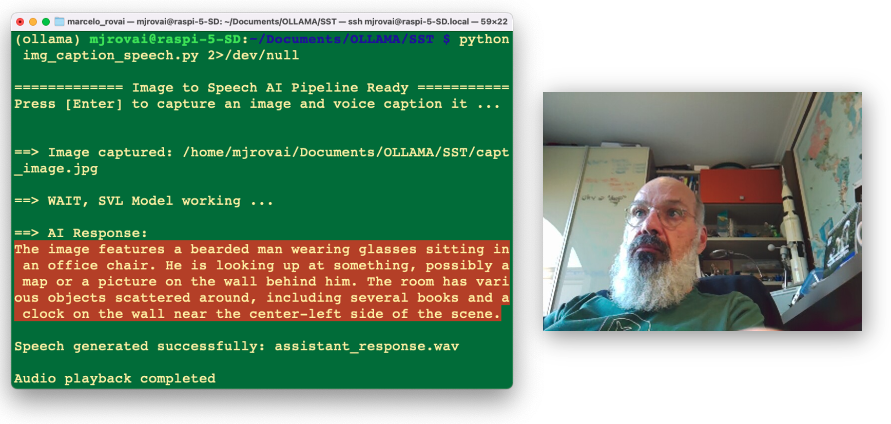
Troubleshooting
To work simultaneously with STT and the camera in the same environment, we should ensure that all core scientific packages are version-aligned for the Raspberry Pi environment. To use NumPy 1.24.2 on our Raspberry Pi, we must ensure that both our SciPy and Librosa versions are compatible with that NumPy version.
So, to avoid an eventual numpy.exceptions import error, and other possible incompatibilities, we should downgrade scipy (and librosa) to versions that support numpy 1.24.2. According to official compatibility tables, scipy 1.11.x works with numpy 1.24.x. Librosa versions released after 0.9.0 also provide better support for recent NumPy releases. However, some older versions of Librosa are not compatible with NumPy 1.24.2 due to deprecated NumPy attributes. So, to fix it, we should run the lines below:
pip uninstall scipy librosa
pip install 'scipy>=1.11,<1.12' 'librosa>=0.10,<0.11'Conclusion
This chapter introduced us to multimodal AI system development through an audio and vision processing pipeline. We learned to integrate speech recognition, language models, and speech synthesis into a cohesive system that runs efficiently on edge hardware.
We explored how to architect systems with multiple AI components, handle complex error conditions, and optimize performance within resource constraints.
These skills are essential for the advanced topics in upcoming chapters, including RAG systems, agent architectures, and the integration of physical computing. The system thinking approach used here will be essential for future AI engineering work.
We should consider how the voice interaction capabilities we built might enhance other AI systems. Many applications benefit from voice interfaces, and the foundation established here can be adapted and extended for various use cases. We can, for example, transform our audio pipeline into a smart home assistant by integrating physical computing elements. Voice commands can trigger LED indicators, read sensor values, or control actuators connected to our Raspberry Pi GPIO pins. Voice queries about environmental conditions can trigger sensor readings, while voice commands can control connected devices.
This chapter extends our SLM and VLM work by adding input and/or output modalities beyond text and images. The same language models we used previously now process voice-derived input and generate responses for speech synthesis.
Consider how RAG systems from later chapters might integrate with voice interactions. Voice queries could trigger document retrieval, with synthesized responses incorporating retrieved information.